2 chatper01 時間資料分析
本章將介紹時間資料分析的基本概念與應用。
2.2 時間序列類型
時間序列可以分為以下幾種類型：
- 平穩型 (Stationary Time Series)：統計特性（均值、變異數）在時間上保持不變。例如某些財經指標的日波動率。
- 無定向型 (Non-Stationary Time Series)：統計特性隨時間變化，如股票市場指數。
- 趨勢型 (Trend Time Series)：數據隨時間呈現明顯增長或下降的趨勢，例如全球氣溫變化。
- 季節型 (Seasonal Time Series)：數據隨時間週期性變化，如每年的電力消耗模式。
- 介入事件型 (Intervention Time Series)：某個事件影響數據變化，例如政策變更後的經濟數據。
2.2.1 五種類型的示意圖
library(ggplot2)
set.seed(123)
time <- 1:100
# 生成不同類型的時間序列
stationary_series <- ts(rnorm(100, mean = 50, sd = 5))
non_stationary_series <- ts(cumsum(rnorm(100)))
trend_series <- ts(50 + 0.5 * time + rnorm(100, sd = 3))
seasonal_series <- ts(50 + 10 * sin(2 * pi * time / 12) + rnorm(100, sd = 3))
intervention_series <- ts(50 + c(rep(0,50), rep(20,30), rep(10,20)) + rnorm(100, sd = 3))
# 繪製圖表
ggplot(data = data.frame(time, value = stationary_series), aes(x = time, y = value)) +
geom_line() + ggtitle("平穩型 (Stationary Time Series)")## Don't know how to automatically pick scale for object of type <ts>. Defaulting to continuous.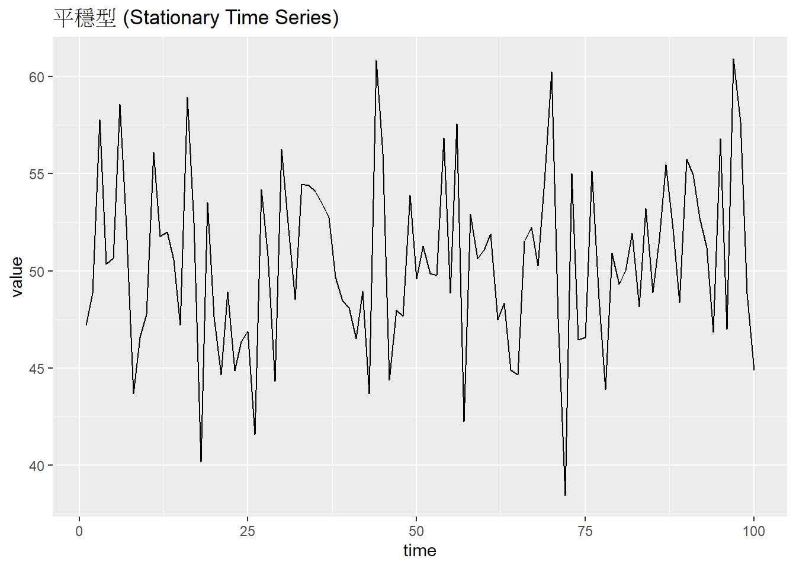
ggplot(data = data.frame(time, value = non_stationary_series), aes(x = time, y = value)) +
geom_line() + ggtitle("無定向型 (Non-Stationary Time Series)")## Don't know how to automatically pick scale for object of type <ts>. Defaulting to continuous.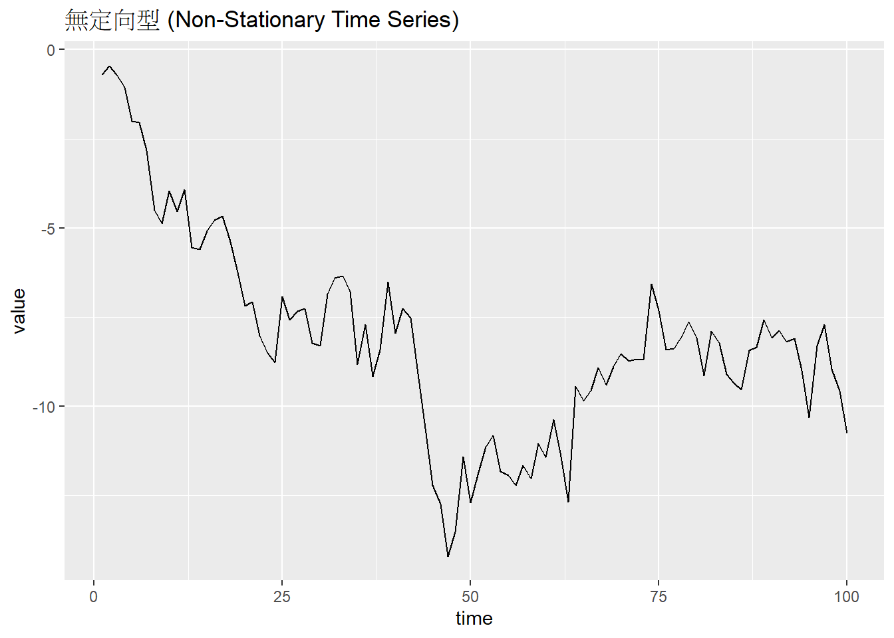
ggplot(data = data.frame(time, value = trend_series), aes(x = time, y = value)) +
geom_line() +
geom_smooth(method = "lm", se = FALSE, color = "red") +
ggtitle("趨勢型 (Trend Time Series) - 含趨勢線")## Don't know how to automatically pick scale for object of type <ts>. Defaulting to continuous.
## `geom_smooth()` using formula = 'y ~ x'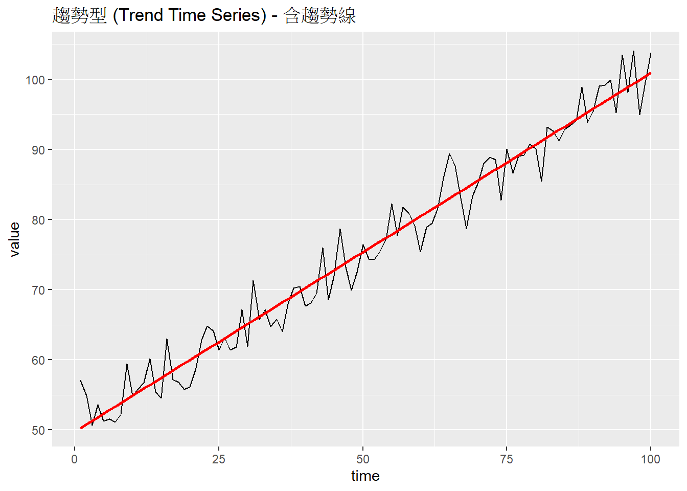
ggplot(data = data.frame(time, value = seasonal_series), aes(x = time, y = value)) +
geom_line() +
facet_wrap(~cut(time, breaks=5), scales="free_x") +
ggtitle("季節型 (Seasonal Time Series) - 分五個時段")## Don't know how to automatically pick scale for object of type <ts>. Defaulting to continuous.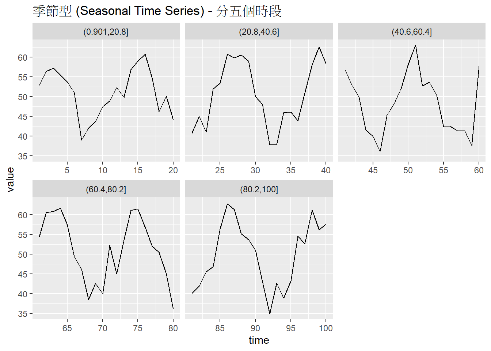
ggplot(data = data.frame(time, value = intervention_series), aes(x = time, y = value)) +
geom_line() +
ggtitle("介入事件型 (Intervention Time Series) - 影響後下降")## Don't know how to automatically pick scale for object of type <ts>. Defaulting to continuous.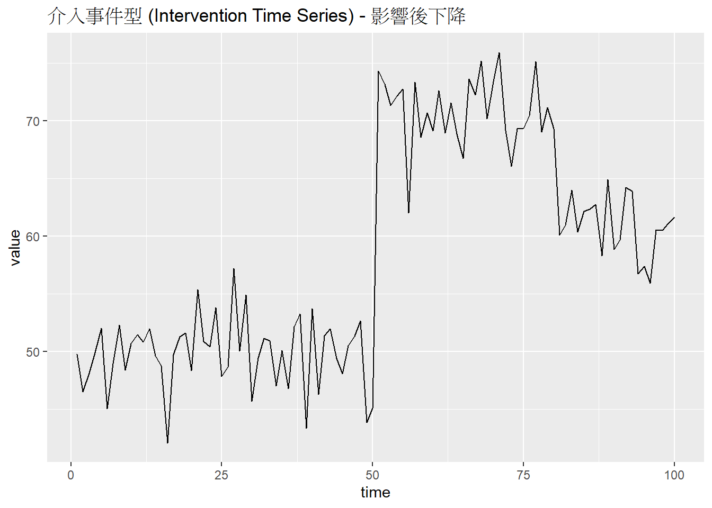
2.3 時間序列的分析步驟

2.3.1 時間定義分析法（Analysis in Time Domain）
模式建構、參數估計、資料的適合度檢定，需適中的觀測值。
移動平均法 (Moving Average, MA)：平滑數據以減少短期波動，分成 移動平均法、加權移動平均法、指數平滑法。
自回歸 (Autoregressive, AR) 模型：使用過去數值來預測未來數值。
ARIMA（自回歸整合移動平均）模型：綜合 AR 和 MA 方法，適用於非平穩序列。依照各類模型可以依照 ARMA、ARIMA、SARIMA 進行選擇
範例：
library(forecast)
ma_series <- ma(time_series_data, order = 5) # 計算 5 期移動平均
plot.ts(ma_series, main = "移動平均時間序列", ylab = "數值", xlab = "時間")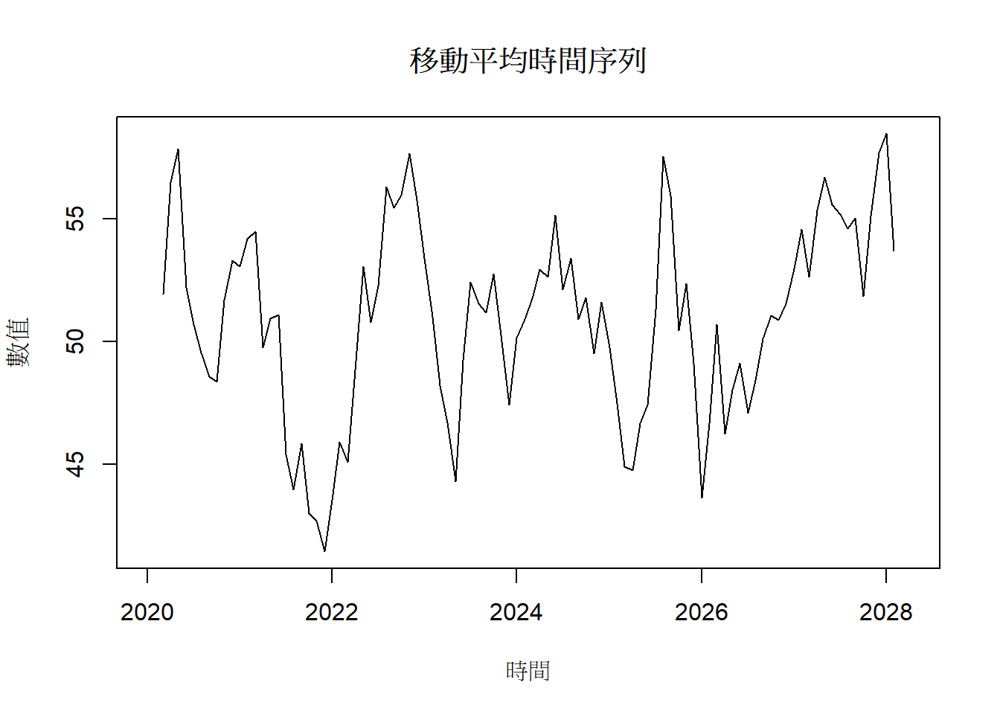
2.5 R 語言中的時間序列分析
2.5.2 產生模擬時間序列數據
set.seed(123)
time_series_data <- ts(rnorm(100, mean = 50, sd = 10), frequency = 12, start = c(2020, 1))
plot.ts(time_series_data, main = "模擬時間序列數據", ylab = "數值", xlab = "時間")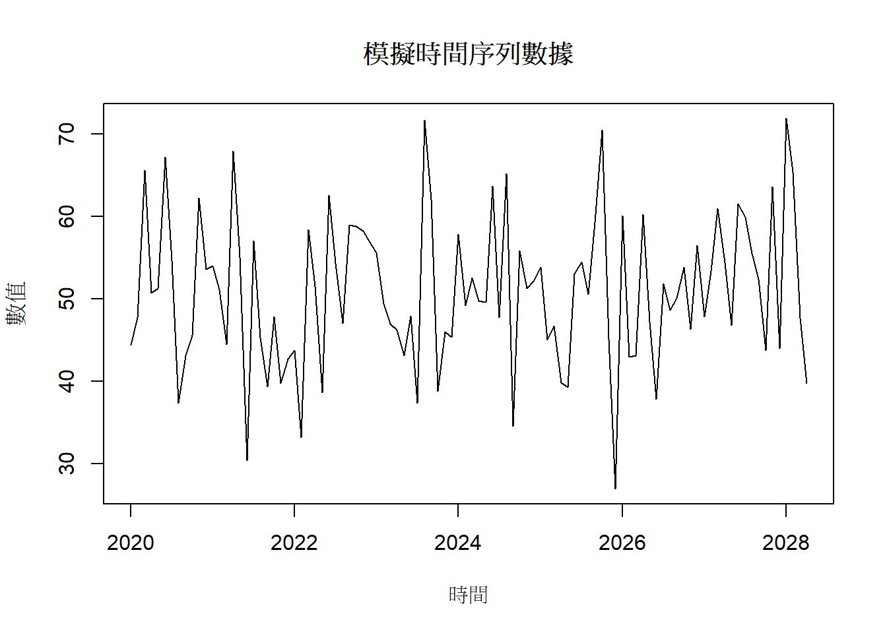
2.5.3 平穩性檢定 (ADF Test)
## Warning in adf.test(time_series_data): p-value smaller than printed p-value##
## Augmented Dickey-Fuller Test
##
## data: time_series_data
## Dickey-Fuller = -4.3961, Lag order = 4, p-value = 0.01
## alternative hypothesis: stationary2.5.4 自相關與偏自相關圖
par(mfrow=c(1,2))
acf(time_series_data, main="自相關函數 (ACF)")
pacf(time_series_data, main="偏自相關函數 (PACF)")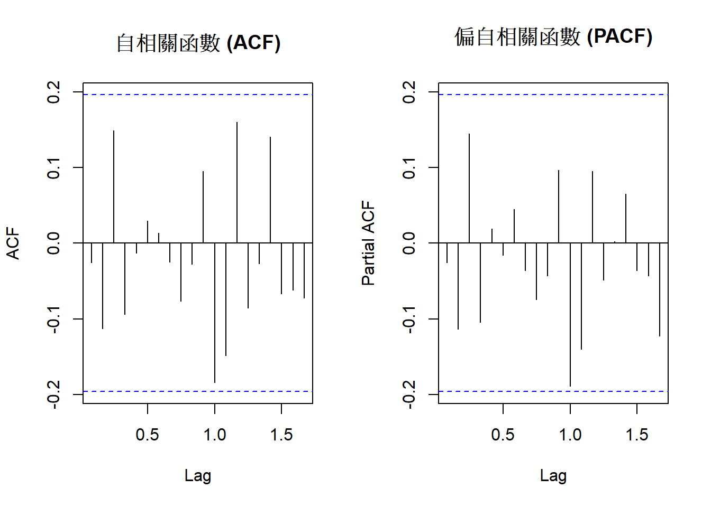
2.5.5 ARIMA 模型擬合與預測
## Series: time_series_data
## ARIMA(0,0,0)(1,0,0)[12] with non-zero mean
##
## Coefficients:
## sar1 mean
## -0.2178 50.8040
## s.e. 0.1056 0.7459
##
## sigma^2 = 80.32: log likelihood = -360.47
## AIC=726.95 AICc=727.2 BIC=734.77
##
## Training set error measures:
## ME RMSE MAE MPE MAPE MASE ACF1
## Training set 0.0264996 8.87197 7.100969 -3.264095 14.78062 0.6115852 -0.04234531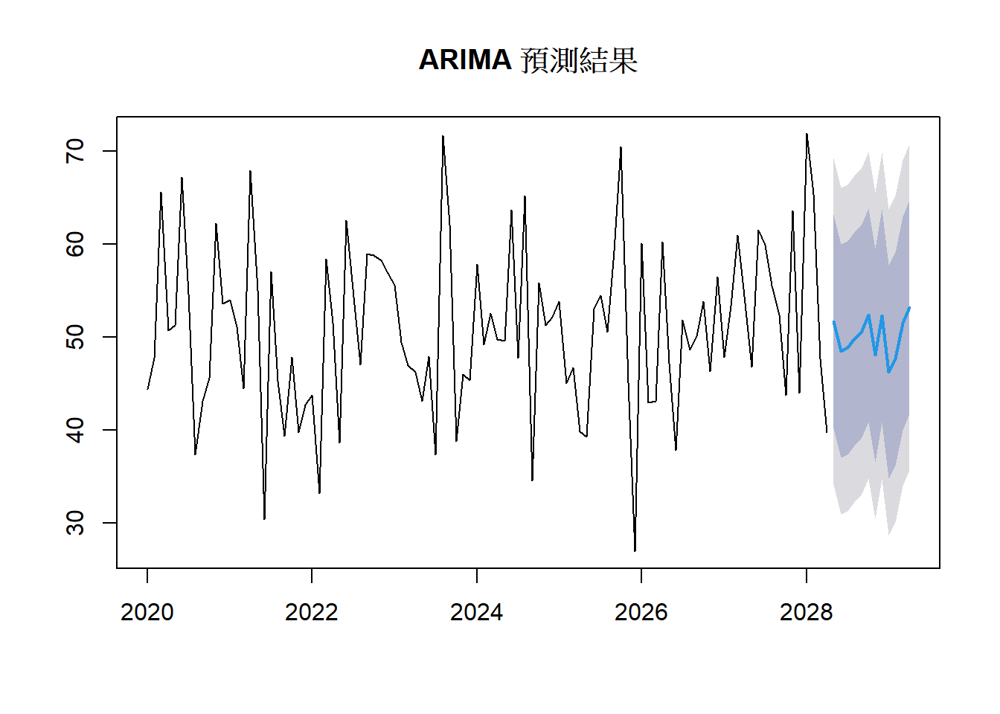
2.5.6 書本的範例:二氧化碳圖形檢視
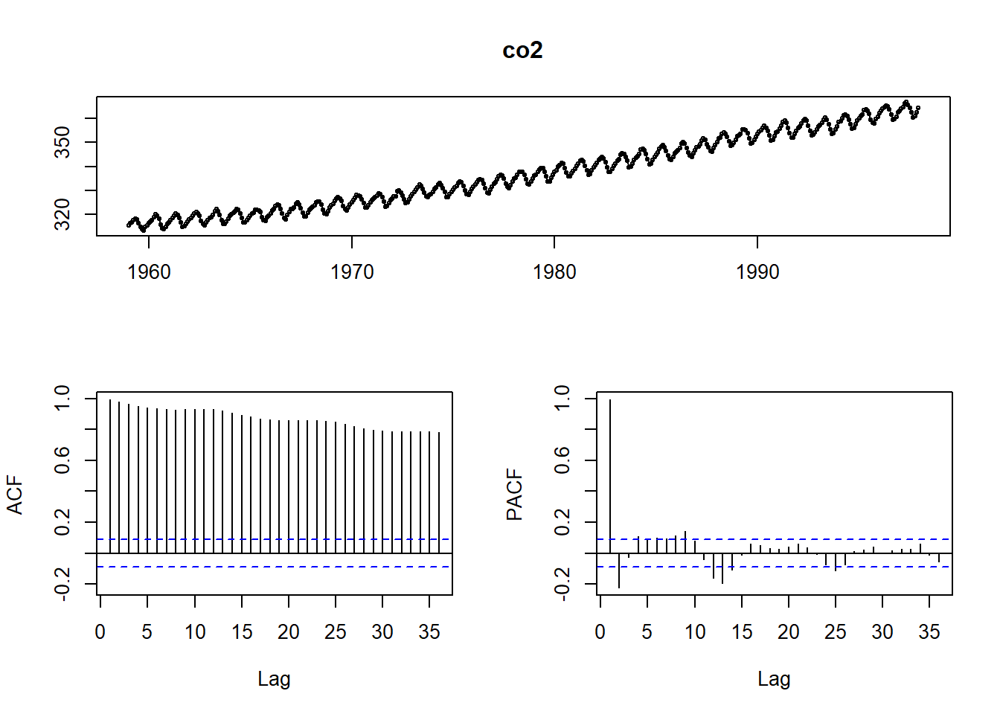
# 將 co2 資料轉換為矩陣格式
co2_matrix <- matrix(data = co2,
ncol = 12,
byrow = TRUE,
dimnames = list(1959:1997, month.abb))
# 將矩陣轉換為資料框
co2_dataframe <- as.data.frame(co2_matrix)
co2_dataframe <- co2_dataframe[, c( month.abb)] # 調整欄位順序
# 查看格式化後的資料
print(co2_dataframe)## Jan Feb Mar Apr May Jun Jul Aug Sep Oct Nov Dec
## 1959 315.42 316.31 316.50 317.56 318.13 318.00 316.39 314.65 313.68 313.18 314.66 315.43
## 1960 316.27 316.81 317.42 318.87 319.87 319.43 318.01 315.74 314.00 313.68 314.84 316.03
## 1961 316.73 317.54 318.38 319.31 320.42 319.61 318.42 316.63 314.83 315.16 315.94 316.85
## 1962 317.78 318.40 319.53 320.42 320.85 320.45 319.45 317.25 316.11 315.27 316.53 317.53
## 1963 318.58 318.92 319.70 321.22 322.08 321.31 319.58 317.61 316.05 315.83 316.91 318.20
## 1964 319.41 320.07 320.74 321.40 322.06 321.73 320.27 318.54 316.54 316.71 317.53 318.55
## 1965 319.27 320.28 320.73 321.97 322.00 321.71 321.05 318.71 317.66 317.14 318.70 319.25
## 1966 320.46 321.43 322.23 323.54 323.91 323.59 322.24 320.20 318.48 317.94 319.63 320.87
## 1967 322.17 322.34 322.88 324.25 324.83 323.93 322.38 320.76 319.10 319.24 320.56 321.80
## 1968 322.40 322.99 323.73 324.86 325.40 325.20 323.98 321.95 320.18 320.09 321.16 322.74
## 1969 323.83 324.26 325.47 326.50 327.21 326.54 325.72 323.50 322.22 321.62 322.69 323.95
## 1970 324.89 325.82 326.77 327.97 327.91 327.50 326.18 324.53 322.93 322.90 323.85 324.96
## 1971 326.01 326.51 327.01 327.62 328.76 328.40 327.20 325.27 323.20 323.40 324.63 325.85
## 1972 326.60 327.47 327.58 329.56 329.90 328.92 327.88 326.16 324.68 325.04 326.34 327.39
## 1973 328.37 329.40 330.14 331.33 332.31 331.90 330.70 329.15 327.35 327.02 327.99 328.48
## 1974 329.18 330.55 331.32 332.48 332.92 332.08 331.01 329.23 327.27 327.21 328.29 329.41
## 1975 330.23 331.25 331.87 333.14 333.80 333.43 331.73 329.90 328.40 328.17 329.32 330.59
## 1976 331.58 332.39 333.33 334.41 334.71 334.17 332.89 330.77 329.14 328.78 330.14 331.52
## 1977 332.75 333.24 334.53 335.90 336.57 336.10 334.76 332.59 331.42 330.98 332.24 333.68
## 1978 334.80 335.22 336.47 337.59 337.84 337.72 336.37 334.51 332.60 332.38 333.75 334.78
## 1979 336.05 336.59 337.79 338.71 339.30 339.12 337.56 335.92 333.75 333.70 335.12 336.56
## 1980 337.84 338.19 339.91 340.60 341.29 341.00 339.39 337.43 335.72 335.84 336.93 338.04
## 1981 339.06 340.30 341.21 342.33 342.74 342.08 340.32 338.26 336.52 336.68 338.19 339.44
## 1982 340.57 341.44 342.53 343.39 343.96 343.18 341.88 339.65 337.81 337.69 339.09 340.32
## 1983 341.20 342.35 342.93 344.77 345.58 345.14 343.81 342.21 339.69 339.82 340.98 342.82
## 1984 343.52 344.33 345.11 346.88 347.25 346.62 345.22 343.11 340.90 341.18 342.80 344.04
## 1985 344.79 345.82 347.25 348.17 348.74 348.07 346.38 344.51 342.92 342.62 344.06 345.38
## 1986 346.11 346.78 347.68 349.37 350.03 349.37 347.76 345.73 344.68 343.99 345.48 346.72
## 1987 347.84 348.29 349.23 350.80 351.66 351.07 349.33 347.92 346.27 346.18 347.64 348.78
## 1988 350.25 351.54 352.05 353.41 354.04 353.62 352.22 350.27 348.55 348.72 349.91 351.18
## 1989 352.60 352.92 353.53 355.26 355.52 354.97 353.75 351.52 349.64 349.83 351.14 352.37
## 1990 353.50 354.55 355.23 356.04 357.00 356.07 354.67 352.76 350.82 351.04 352.69 354.07
## 1991 354.59 355.63 357.03 358.48 359.22 358.12 356.06 353.92 352.05 352.11 353.64 354.89
## 1992 355.88 356.63 357.72 359.07 359.58 359.17 356.94 354.92 352.94 353.23 354.09 355.33
## 1993 356.63 357.10 358.32 359.41 360.23 359.55 357.53 355.48 353.67 353.95 355.30 356.78
## 1994 358.34 358.89 359.95 361.25 361.67 360.94 359.55 357.49 355.84 356.00 357.59 359.05
## 1995 359.98 361.03 361.66 363.48 363.82 363.30 361.94 359.50 358.11 357.80 359.61 360.74
## 1996 362.09 363.29 364.06 364.76 365.45 365.01 363.70 361.54 359.51 359.65 360.80 362.38
## 1997 363.23 364.06 364.61 366.40 366.84 365.68 364.52 362.57 360.24 360.83 362.49 364.342.5.7 書本的範例:二氧化碳一二階差分圖形檢視
# 建立訓練集和測試集
train <- ts(co2[seq(1, length(co2) - 12)], frequency = 12, start = c(1959, 1))
test <- ts(co2[seq(length(co2) - 11, length(co2))], frequency = 12, start = c(1971, 1))
# 畫出差分後的時序圖
tsdisplay(diff(train), main = "First difference of CO2")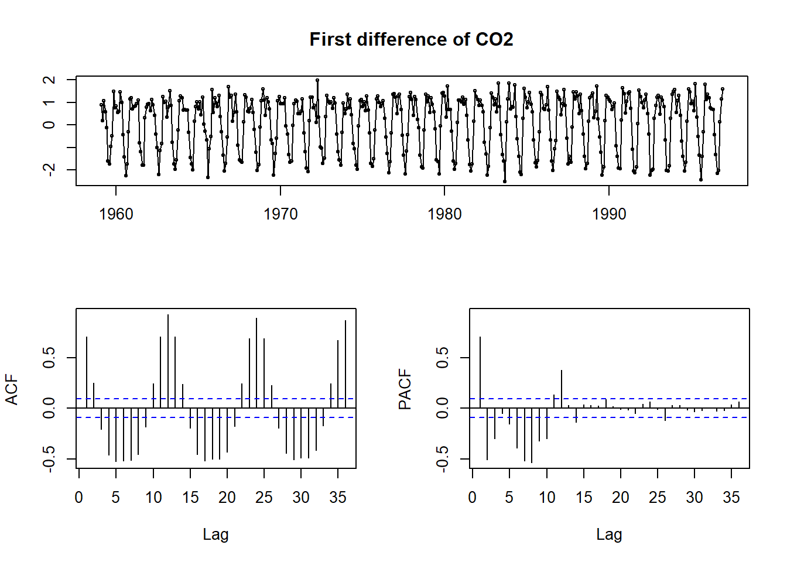
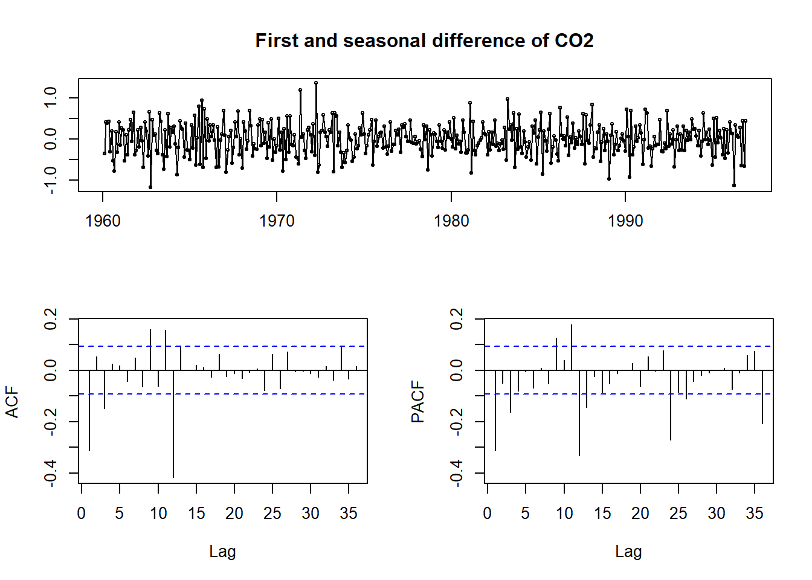
2.5.8 書本的範例:二氧化碳模式參數估計
# 訓練 ARIMA 模型
ml <- Arima(train, order = c(0, 1, 3), seasonal = list(order = c(0, 1, 1), period = 12))
# 顯示模型係數
ml$var.coef## ma1 ma2 ma3 sma1
## ma1 0.0023029615 -0.0007683071 -1.074237e-04 -2.307261e-04
## ma2 -0.0007683071 0.0025351614 -8.007569e-04 -1.532930e-05
## ma3 -0.0001074237 -0.0008007569 2.204924e-03 8.528007e-05
## sma1 -0.0002307261 -0.0000153293 8.528007e-05 6.782235e-04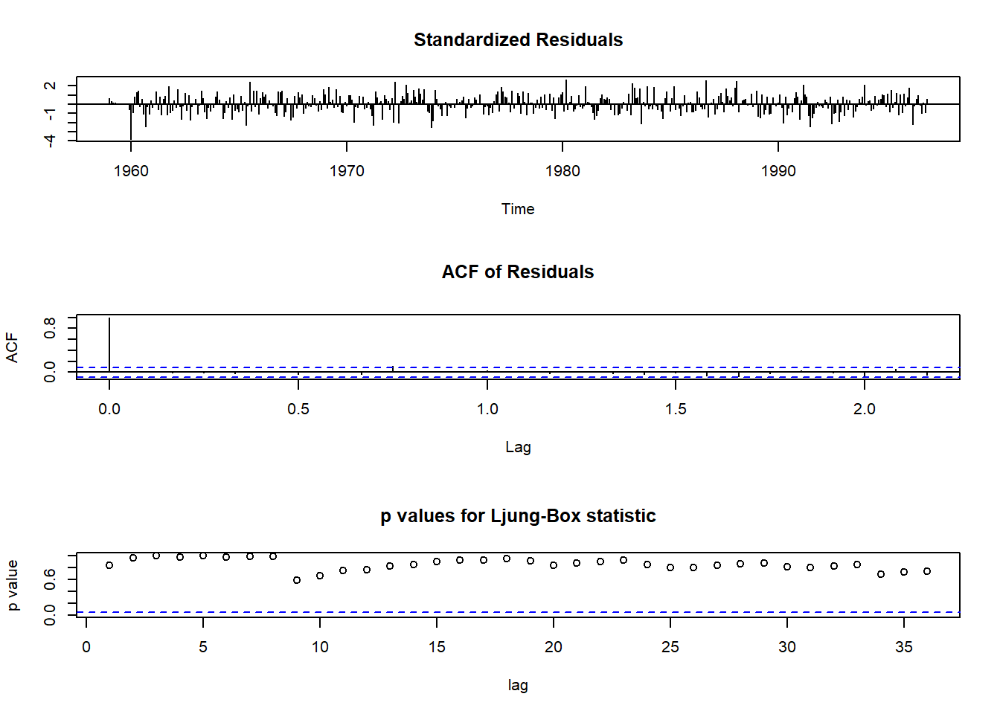
# 繪製殘差的 QQ 圖
qqnorm(residuals(ml))
qqline(residuals(ml))
# 添加圖例顯示 Shapiro-Wilk 檢驗的 p-value
legend("topleft", legend = paste("p-value =",
round(shapiro.test(residuals(ml))$p.val, 4)))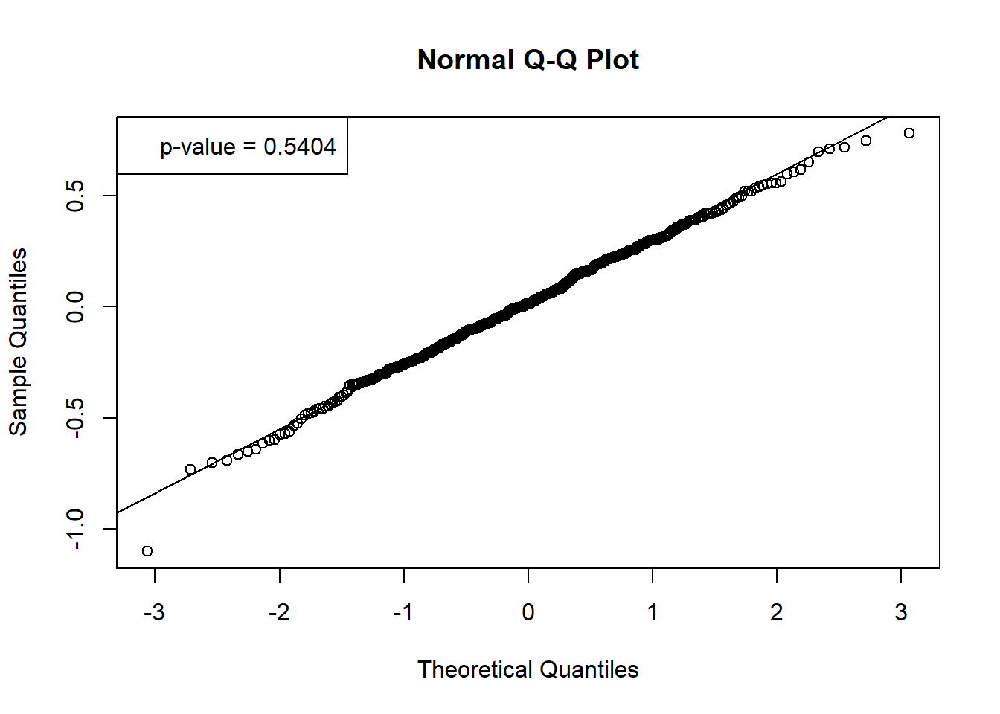 ### 書本的範例:二氧化碳模式參數調整
# 設定部分固定參數
fix.par <- rep(NA,10);
fix.par[c(2,4:8)] = 0
# 建立 ARIMA 模型
ml <- Arima(train,
order = c(0, 1, 9),
seasonal = list(order = c(0, 1, 1), period = 12),
fixed = fix.par)
# 檢查模型的參數估計值
ml$var.coef## ma1 ma3 ma9 sma1
## ma1 0.0020603058 -0.0003375363 0.0001347243 -0.0001734961
## ma3 -0.0003375363 0.0020608515 -0.0000366976 0.0001747009
## ma9 0.0001347243 -0.0000366976 0.0021019556 -0.0001555727
## sma1 -0.0001734961 0.0001747009 -0.0001555727 0.0006538781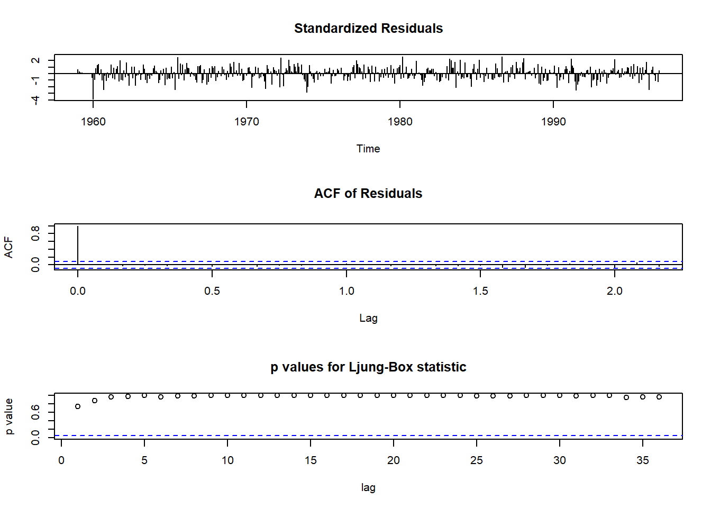
# 繪製殘差的 QQ 圖
qqnorm(residuals(ml))
qqline(residuals(ml))
# 添加 Shapiro-Wilk 檢驗的 p 值到圖例
legend("topleft",
legend = paste("p-value =",
round(shapiro.test(residuals(ml))$p.value, 4)))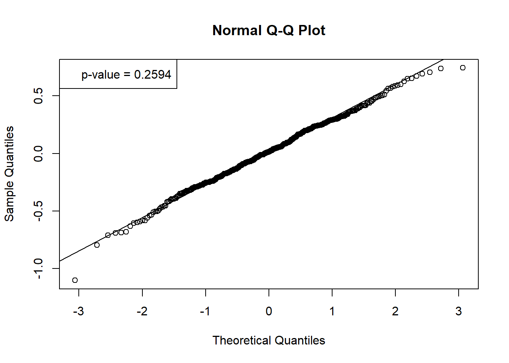
此文件可以在 RStudio 的 R Markdown 環境中執行，以進行時間序列分析。